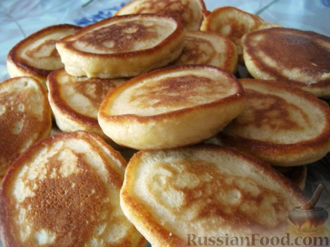

Kefir Pancakes

Description
The recipe for thick pancakes with kefir.
Ingredients
- kefir - 1.5 cup (250 ml)
- wheat flour - 1.5 cups (about 240 g)
- eggs - 1 pcs
- sunflower oil
- sugar - 2-3 tbsp
- salt - 0.5 tsp
- soda - 0.25 tsp
Steps
- Add sugar and salt to the eggs and beat well with a whisk.
- Then add the kefir. Mix well.
- Put the bowl on a low heat and, stirring, heat the mixture until it becomes slightly warm (to about 40
degrees). Remove the bowl from the heat.
- Pour into the warm mixture sifted flour in batches, constantly beating with a whisk to avoid lumps. Add
baking soda.
- Mix everything well. Leave the dough for kefir fritters for about 20-30 minutes. Do not stir the dough
anymore!
- Heat a frying pan, pour oil (3-5 mm layer). You can use less oil for frying, but the more oil, the stronger
the fritters will rise.
- Drop the dough into the well heated oil with a tablespoon, gently scooping it from the edge (without
stirring!).
- Fry the fritters over medium heat on one side at first until browned, about 2 minutes.
- Then turn the pancakes over, cover the pan with a lid and fry on the other side for another 1-2 minutes. You
can leave the lid on, but the pancakes turn out puffier under the lid.
- Serve kefir pancakes warm, with sour cream, jam or honey.
- Enjoy!